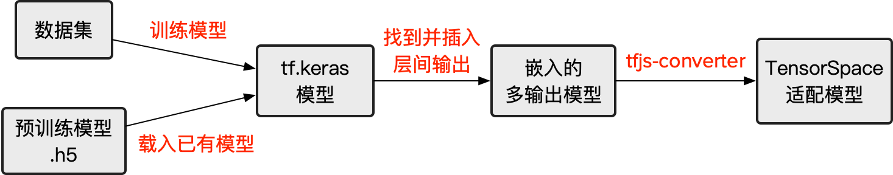
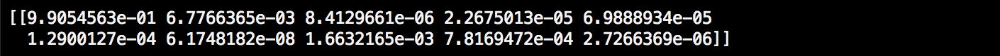

本篇将介绍如何预处理基于 tf.keras 搭建的神经网络模型，适配 TensorSpace 所需要的拥有中间层输出的模型。
以下为本篇教程所使用的代码及模型文件：
filter_center_focus
tf_keras_model.py
filter_center_focus
convert_tf_keras.sh
filter_center_focus
模型
运行环境：Python 3.6.5。相关依赖如下：
import tensorflow as tf
import numpy as np
此外，我们还需要安装 tfjs-converter (基于 TensorFlow.js 的转换工具)：
$ pip install tensorflowjs安装完成后，tensorflowjs_converter 变为系统可用关键字，可用下列命令来调用：
$ tensorflowjs_converter \
--input_format=tf_saved_model \
--output_node_names=$onn \
--saved_model_tags=serve \
../models/tensorflow_model \
../models/json_models/tensorflow如果您在此之前没有任何基于 tf.keras 的经验，强烈建议先阅读由 TensorFlow 所撰写的官方教程。
预处理 tf.keras 模型，有以下几个步骤：

图1 - 预处理 tf.keras 模型的步骤
filter_center_focus
1. 训练/加载模型
filter_center_focus
2. 植入中间层输出
filter_center_focus
3. 保存嵌入后的模型
filter_center_focus
4. 转换为 TensorSpace 适配的模型
在本教程中，我们将使用 MNIST 数据集和 LeNet 神经网络结构来构筑一个 tf.keras 模型作为例子。
1 训练/加载模型
1.1 训练新模型
若没有可直接使用的 tf.keras 模型，可依照本小节的步骤创建一个新的 MNIST 手写识别的样例模型。
根据 LeNet 的网络结构：

图2 - LeNet 网络结构
用以下代码迅速搭建其网络结构。
〔源码〕 tf_keras_model.py
def create_sequential_model():
single_output_model = tf.keras.models.Sequential([
tf.keras.layers.InputLayer(input_shape=(28, 28)),
tf.keras.layers.Reshape((28, 28, 1), input_shape=(28, 28,)),
tf.keras.layers.Convolution2D(
filters=6, kernel_size=5, strides=1,
input_shape=(28, 28, 1), name="conv_1"
),
tf.keras.layers.MaxPool2D(
pool_size=(2, 2), strides=(2, 2), name="maxpool_1"
),
tf.keras.layers.Convolution2D(
filters=16, kernel_size=5, strides=1, name="conv_2"
),
tf.keras.layers.MaxPool2D(
pool_size=(2, 2), strides=(2, 2), name="maxpool_2"
),
tf.keras.layers.Flatten(),
tf.keras.layers.Dense(120, activation=tf.nn.relu, name="dense_1"),
tf.keras.layers.Dense(84, activation=tf.nn.relu, name="dense_2"),
tf.keras.layers.Dense(10, activation=tf.nn.softmax, name="softmax")
])
return single_output_modelwb_sunny注意：
- filter_center_focus 为所有想展示的网络层均添加了 “name” 属性。
在完成网络结构的构建后，使用 MNIST 数据集训练模型。
〔源码〕 tf_keras_model.py
mnist = tf.keras.datasets.mnist
(x_train, y_train),(x_test, y_test) = mnist.load_data()
x_train, x_test = x_train / 255.0, x_test / 255.0
model.compile(optimizer='adam',
loss='sparse_categorical_crossentropy',
metrics=['accuracy'])
model.fit(x_train, y_train, epochs=5)训练完成后，得到一个具有完整结构及一定训练程度的 Keras 神经网络模型。通过以下代码查看结果是否正确。
〔源码〕 tf_keras_model.py
input_sample = np.ndarray(shape=(28,28), buffer=np.random.rand(28,28))
input_sample = np.expand_dims(input_sample, axis=0)
print(model.predict(input_sample))得到与下图相似的单一预测结果（一个长度为10的列表）：

图3 - 新 Keras 模型的单一预测结果
1.2 加载已有模型
如已有预训练模型，可使用以下代码来加载。
〔源码〕 tf_keras_model.py
model = tf.keras.models.load_model(
"PATH_TO_MODEL/model.h5",
custom_objects=None,
compile=True
)或者该模型的结构与权重为分开保存，使用以下代码来加载。
〔源码〕 tf_keras_model.py
json_path = "PATH_TO_JSON/model.json"
weight_path = "PATH_TO_WEIGHT/weights.hdf5"
structure = open(json_path, "r")
model = tf.keras.models.model_from_json(
structure
)
model.load_weights(weight_path)与完成创建新模型相似，加载后通过以下代码检测输出是否正确。〔源码〕 tf_keras_model.py
input_sample = np.ndarray(shape=(28,28), buffer=np.random.rand(28,28))
input_sample = np.expand_dims(input_sample, axis=0)
print(model.predict(input_sample))我们应当可以得到与下图相似的单一预测结果：
图4 - 加载已有 Keras 模型得到的单一预测结果
wb_sunny注意：
- filter_center_focus 由于我们使用随机数作为输入，因此输出也相对非常随机。
2 添加中间层输出
通过第一步，可得到 LeNet 的预测结果：1维数组，长度为10，每一位代表该序号所对应的概率。接下来获取中间层输出。
首先，我们可以使用 summary() 方法得到中间层信息（layer.name）。当然，也可通过 layer 对象直接获取。
〔源码〕 tf_keras_model.py
model.summary()
for layer in model.layers:
print(layer.name)
图5 - 中间层信息输出
wb_sunny注意：
filter_center_focus
若在之前步骤中已设置了恰当的 name 属性，可以很迅速的找到其名称及对应信息。
filter_center_focus
若该模型为加载预训练模型得到，大多数情况下，中间层名称应与其所对应的类相关。
通过以下方法提取所需要的中间层，并将其添加到新创建的模型中。
〔源码〕 tf_keras_model.py
output_layer_names = [
"conv_1", "maxpool_1", "conv_2", "maxpool_2",
"dense_1", "dense_2", "softmax"
]
def generate_encapsulate_model_with_output_layer_names(model, output_layer_names):
display_model = tf.keras.models.Model(
inputs=model.input,
outputs=list(map(lambda oln: model.get_layer(oln).output, output_layer_names))
)
return display_model或者用以下方式添加所有中间层。
〔源码〕 tf_keras_model.py
def generate_encapsulate_model(model):
display_model = tf.keras.models.Model(
inputs=model.input,
# ignore 1st layer (input), since some old models do not have 1st layer as tf.layer
outputs=list(map(lambda layer: layer.output, model.layers[1:]))
)
return display_modelwb_sunny注意：
filter_center_focus
请不要包括任何输入层（ 'input' 或是 input_layer ）。由于某些模型是由 Model() 构建，其输入部分并不是一个 tf.keras 层。
filter_center_focus
确认所需要的中间层并保证其顺序。
然后，可生成嵌入多输出模型。〔源码〕 tf_keras_model.py
enc_model = generate_encapsulate_model_with_output_layer_names(model, output_layer_names)
# OR
# enc_model = generate_encapsulate_model(model)可使用嵌入多输出模型进行预测
print(enc_model.predict(input_sample))
图6 - 经过预处理之后的中间层输出
最后一层的输出对应原模型的预测结果，它们是一致的。

图7 - 最后一层的输出与原模型预测结果一致
新模型可以输出所有的你需要的层间数据。
3 保存嵌入后的多输出模型
为了进一步转换模型，需保存嵌入后的多输出模型。
wb_sunny注意：
- filter_center_focus 因为我们并不需要进一步训练，所以不需要编译嵌入的多输出模型。
- filter_center_focus 若希望基于该嵌入后模型继续训练，可加入合适的损失和优化函数方法。这里我们以 “adam” 和 “sparse_categorical_crossentropy” 为例。
〔源码〕 tf_keras_model.py
enc_model.compile(optimizer='adam',
loss='sparse_categorical_crossentropy',
metrics=['accuracy'])
tf.keras.models.save_model(
gen_dis_model,
"/PATH_TO_NEW_MODEL/enc_model.h5",
overwrite=True
)4 转换为 TensorSpace 适配的模型
最后一步将先前得到的嵌入的多输出模型转换为 TensorSpace 支持的模型。我们将会用到 tfjs-converter。
我们可以通过以下脚本来进行转换：
tensorflowjs_converter \
--input_format=keras \
../models/enc_tf_keras_model.h5 \
../models/json_models/tf_keras
图8 - 转换后所保存的最终模型文件
wb_sunny注意：
- filter_center_focus
得到两种类型的文件：
- flare 一份 model.json 文件：包含所得到的模型结构信息（包括中间层输出）。
- flare 一些 权重 文件：包含模型训练所得到的权重信息。权重文件的数量取决于模型的结构。
- filter_center_focus 默认设置下，模型结构文件将命名为 "model.json"，可修改其名称。
- filter_center_focus 权重文件都将以 "group1-shard1of1" 的格式命名并在 “model.json” 声明其关联性。因此，我们建议不要更改权重文件的名称。如有情况需要修改的，请妥善修改 “.json” (“model.json”) 中的关联信息。
- filter_center_focus 点击链接获取更多 tfjs-converter 的信息。
若至此一切顺利，可移步下一部分——
加载 TensorSpace 适配模型